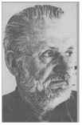

Zen ve Motosiklet Bakım Sanatı roman, otobiyografi ve felsefi deneme türlerinin sınırlarını genişleten; bütün bir akılcılık geleneğini sorgulayan benzersiz bir
"kült kitap".
Hikâye bir adamın, oğlu ve iki arkadaşıyla birlikte yaptığı uzun bir motosiklet yolculuğundan oluşuyor. Yolcular, metalik-plastik yalnızlıkların hüküm sürdüğü, özdeki çirkinliklerin yapay bir "stil" cilasıyla kapatılmaya çalışıldığı, "stilize" nesneler, "stilize" insanlar ve ilişkilerle dolu bir hayatın yaşandığı Amerikan kentlerinden, sapa dağ yollarından, uçsuz bucaksız düzlüklerden geçer, bir dağa tırmanır ve en sonunda okyanusa varırlar.
Adam yolculuk boyunca bir de "iç yolculuk" yaşamakta, başka doruklarda gezinmektedir. Kendi "deli" geçmişine, aklın ötesine yolculuk yapmaktadır. "Akılcılık" dediği hayaletin peşinde antik Greklerden modern bilim felsefesine kadar bütün Batı düşüncesini kat eder. Etrafındaki bütün çirkinliğin, sahteliğin sebebi olduğu söylenen teknolojiyi suçlamaz. Sorun, teknoloji üreten insanlarla ürettikleri nesneler arasındaki ilişkidedir. Bunun da temelinde gerçekliği, özne ve nesne diye uzlaşmaz karşı kutuplar koyutlayarak kavramaya çalışan Akıl anlayışındaki "genetik bir bozukluk" yatar. Bu anlayış, Nitelik sorunuyla hesaplaşamaz. Bir sanatçının yapıtını oluşturduğu, bir tamircinin bir motosikleti özenle tamir ettiği saf Nitelik anlarında özne ve nesne özdeştir. Bir yanda insan, bir yanda dünya/nesne yoktur. Değer yoksa olgu da olamaz.
"İyi", gerçekliğin bir biçimi değildir, kendisidir.
Pirsig'e göre dünyayı politik programlar oluşturarak düzeltemezsiniz, bunlar ancak temeldeki değerler sisteminin doğru olması durumunda işe yarar. "Dünyayı düzeltmenin yeri önce kendi yüreğimiz, kafamız ve ellerimiz ve onlardan çıkan iştir." Bu yüzden de insanoğlunun yazgısını düzeltmekten değil, motosikletin nasıl onarılacağından söz eden bir kitaptır bu. "Çünkü gerçek motosiklet, kendimiz denen motosiklettir."

AYRINTI-ROMAN ISBN 975-539-089-8
ROBERT M. PIRSIG
1928’te Minneapolis’te doğan Robert Maynard Pirsig Minnesota Üniversitesi’nde felsefe, kimya ve gazetecilik öğrenimi gördü. Hindistan’daki Bemaros Hindu Üniversitesi’nde Doğu felsefesi üzerine çalıştı. 1959 ile 1962 yılları arasında Montana ve Illinois’deki çeşitli üniversitelerde kompozisyon ve retorik dersleri verdi. Bu dönemin sonunda ağır bir sinir krizi geçirdi ve elektrik şoku terapisi gördü. Pirsig 1963 ile 1967 arasında Minneapolis’te teknik yazar olarak çalıştı.
Zen ve Motosiklet Bakımı Sanatı'nı başlangıçta kısa, hafif bir felsefi deneme olarak yazmayı tasarlamıştı, ama 1968’de motosikletle ülkeyi baştan başa geçerek yaptığı bir geziden sonra anlatı çatısını bu gezi üzerine oturttu. Pirsig sonradan yazdığı sonsözde şöyle diyor: “Kitap tam 121 yayıncı tarafından reddedildikten sonra bir yayıncı kitap için standart avans olan 3000 doları ödemeyi kabul etti. Yayıncı kitabın kendisini niçin yayıncılık yaptığını düşünmeye zorladığını anlatıp kitabı basacağını, ama bu 3000 doların büyük olasılıkla bundan alacağım son para olacağını, bu yüzden de cesaretimin kırılmaması gerektiğini söyledi. Böyle bir kitapta amaç para değildi.” Oysa 1974’te basılan Zen ve Motosiklet Bakım Sanatı kısa zamanda olağanüstü satarak bir best-seller haline geldi. Hem okurlardan hem de eleştirmenlerden çok olumlu tepkiler alan bu hayli çetrefil düşünce metni tam bir “kült kitap” oldu.
Tam olarak belli bir türün içine sokulamadığı için çeşitli eleştirmenlerin roman, otobiyografi ve felsefi deneme olarak sınıflandırdıkları bu metinde adı belirtilmeyen bir anlatıcının oğlu ve iki arkadaşıyla birlikte Minnesota’dan Kaliforniya’ya yaptığı on yedi günlük bir motosiklet yolculuğunun ayrıntıları, aklın ve deliliğin doğasından motosiklet onarımına birçok konuya ilişkin felsefi tartışmalarla iç içe anlatılır. Hem bir motosiklet yolculuğunun hem de bir düşünce yolculuğunun hikâyesi olan Zen ve Motosiklet Bakım Sanatı Batı kültürünün temel felsefi problemlerine ve insanlığın teknolojiyle ilişkisine dair derin bir araştırmanın ürünü olarak görülüp övülmüştür.
Pirsig 1991 ’de de ilk kitabın devamı niteliğinde olan Lila: An Inquiry into Morals adlı kitabını yayınlamıştır. Burada da anlatı çatısını bir deniz yolculuğu oluşturur.
Ayrıntı: 114
Edebiyat dizisi: 37
Zen ve Motosiklet Bakım Sanatı Değerlerin Sorgulanması Robert M. Pirsig
İngilizceden çeviren Süha Sertabiboğlu
Yayıma hazırlayan Tuncay Birkan
Kitabın özgün adı Zen and The Art of Motorcyde Maintenance An Inquiry into Values
Vintage/1989 basımından çevrilmiştir
Kapak illüstrasyonu Sevinç Altan
Kapak düzeni Arslan Kahraman
Düzelti Zeynep Atayman
Basıma hazırlık Renk Yapımevi (0 212) 516 94 15
Baskı ve cilt
Mart Matbaacılık SanatlarıLtd. Şti. (0212) 212 03 39-40
Birinci basım Haziran 1995
ISBN 975-539-089-8
AYRINTI YAYINLARI Piyer Loti Cad. 17/2 34400 Çemberlitaş-İstanbul Tel: (0 212) 518 76 19 Fax: (0 212) 516 45 77
Robert M. Pirsig
ZEN
ve
MOTOSİKLET BAKIM SANATI
DEĞERLERİN SORGULANMASI
Aileme
YAZARIN NOTU
Burada gerçekten olmuş şeylerden bahsediliyor. Retorik gerekçelerle epey değişiklik yapılmış olsa da anlatılanlar esasen gerçek olaylar olarak görülmeli. Fakat ortodoks anlamda Zen Budist pratiğiyle ilgili olarak tamamen doğru bilgiler verdiği düşünülmemeli. Motosikletler hakkında da aynı şey geçerli.
Ve nedir iyi, Phaedrus,
ve nedir iyi olmayan -
Bunu söyleyecek birine ihtiyacımız var mı?